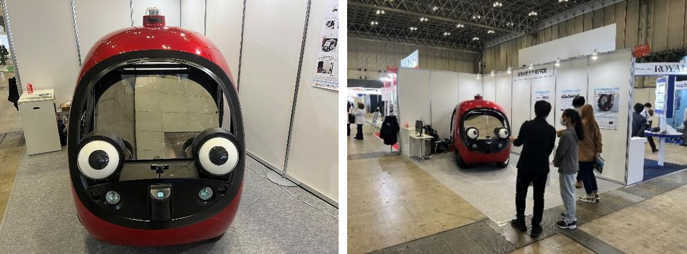

Development of Eye-movement Control in Self-driving Cars
Original title: 無人自動運転車における複数歩行者に向けた視線制御

Left: our self-driving car prototype with robotic eyes, which automatically look at pedestrians in front of the car. Right: our demonstration at CEATEC 2022, where visitors took the role of pedestrians.
Abstract
Many studies have proposed “eyes” as a communication modality between cars and pedestrians. When making eye contact with pedestrians, looking at them in a reasonable and automatic way is an important issue. However, when multiple pedestrians approach the car, it is not obvious how the gaze should be controlled. In this work, we develop a gaze control algorithm that handles multiple pedestrians. We demonstrated a real-car prototype implementing the proposed method at CEATEC 2022. In this paper, we describe the algorithm of our method and report the feedback we received from many visitors.
BibTeX
@inproceedings{Qian2023GazingCar,
author = {Qian, Yinfei and Wu, Zaiqiang and Gui, Xinyue and Toda, Koki and
Chang, Chia-Ming and Igarashi, Takeo},
title = {無人自動運転車における複数歩行者に向けた視線制御},
booktitle = {インタラクション2023論文集},
pages = {603--607},
year = {2023},
month = mar,
publisher = {Information Processing Society of Japan},
url = {https://www.interaction-ipsj.org/proceedings/2023/data/pdf/2B-31.pdf},
note = {Paper ID 2B-31. In Japanese. English title: Development of Eye-movement
Control in Self-driving Cars}
}Project pages are inspired by the websites of Quentin Becker and Zoë Marschner.